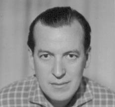
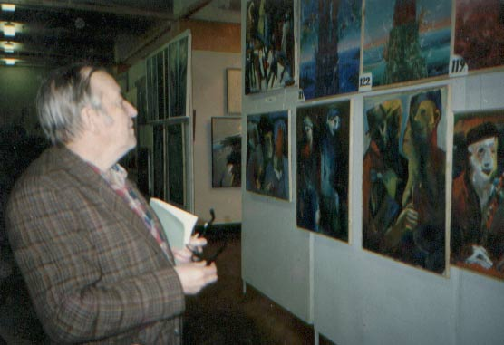

|
|
|
|
Филатов Юрий Павлович
5 стр шр.10  Филатов Юрий Павлович (1926-2000) - опальный филолог и
искусствовед, целенаправленно преследовавшийся в советскую эпоху
"литературоведами в штатском" и титулованными мракобесами советской
лженауки. Причём в нашей удивительной стране никто из упомянутых
высокопоставленных инквизиторов даже после радикального изменения общественного
строя не посчитал нужным публично извиниться перед своими многочисленными
жертвами, одной из которых безусловно был Ю.Филатов. Более того: многие из них
даже пошли на повышение. Теперь они сидят в ещё более шикарных мраморных
дворцах и всё так же вещают нам о высоких моральных принципах и
общечеловеческих идеалах. Именно такова действительность в сказочной Стране
дураков: полное отсутствие принципов плюс безграничный цинизм. 
Ю. Филатов написал две диссертации: о творчестве Ф. Шиллера и об абстрактном искусстве. ( Последнюю – будучи
сотрудником Эрмитажа). Ни по одной из них он не был допущен к защите. В результате
после аспирантуры ему пришлось переквалифицироваться в сторожа, в качестве
которого он и проработал 25 лет. Но с живописью так и не расстался. Большую
позитивную роль он сыграл в творчестве известного петербургского авангардиста Е. Михнова-Войтенко, написав для его выставки буклет. Несколько работ
художника всегда украшали жилище Ю. Филатова. Всю вторую половину жизни с
перерывами Юрий Павлович занимался классификацией произведений мировой живописи
с 12-го по 20-тый век, рассматривая произведения 600 художников. С течением
времени оценка художественных полотен существенно обогащалась: на смену
изобразительно-смысловой оценки (тема) пришла оценка формы (композиция,
колорит, фактура). Таблица Ю.П. Филатова имела 6 вертикальных
граф: 1. Позитивность (против
натуралистического описания зла и смерти) 2. Естественность
(человечность: тело, природа, животные) 3. Красота 4. Целостность (а не
смешивание стилей) 5. Тайна 6. Индивидуальность При этом каждый столбец имел оценочную шкалу в 9 баллов. Таким
образом, максимальная оценка произведения (или в целом художника) была равна
числу 54. Как он мне сказал, Рембрандт набрал более 40 баллов
и занял 1-ое место. К сожалению, эта работа так и осталась неоконченной. Абстракционизм для тоталитарных режимов стал лакмусовой
бумажкой: от признания свободы художественного творчества был совсем маленький
шаг до признания гражданских свобод. Стоит ли удивляться, что первая московская
выставка независимых художников в эпоху застоя была снесена бульдозерами?
Именно в это же время Ю. Филатов пытался принципиально
отстаивать свою позицию. По складу характера отступать он не мог. И результат
известен. В присущем Юрию Павловичу духе системного анализа им был
создан Банк информации перестройки в СССР за 1985-1991 гг на основе печатных и
рукописных документов по 1700 темам и 1000 персоналиям. Главный массив его
Банка информации составляли вырезки из газет и журналов. Имелся поисковый
аппарат из библиографических карточек и поисковых таблиц. Особый массив
составлял анализ ментальных сдвигов общественного сознания (группы, партии,
слоганы, жаргон и т.п.) В 1992 г в Филатовском Банке информации содержалось 40
тысяч систематизированных и 250 тысяч необработанных стаей. До конца жизни
создатель банка обращался в разные инстанции, включая ЗАКС, с просьбой о
помощи. (Например, чтобы привести все данные в единую систему, требовался труд
60 человек в течение полугода!) Но так и не получил реальной помощи. Человек, посещавший Юрия Павловича в последние годы, сначала
заходил в общий коридор двухквартирной секции, до потолка забитый газетными
вырезками. Далее в его квартире он попадал в длинный коридор с папками, среди
которых, между прочим, хранилась коллекция из 5000 грампластинок. А две жилые
комнаты были сплошь заставлены стеллажами его огромной библиотеки. Где и как
обитала его семья, было не совсем понятно. Вероятно, такой образ жизни присущ
только настоящим фанатикам: кроме своего дела их мало что волнует даже в момент
землетрясения, не говоря уже о мелких неурядицах. Вот что писал сам о себе Юрий Павлович в письме одному
зарубежному производителю настольных игр: "В 1986 году я руководил
игровыми клубами в городском масштабе...создавал основы Общей теории игр, их классификацию, терминологию. Создавал и сами игры. Думаю, что в
теоретическом плане я намного опередил зарубежных исследователей комбинационных
игр (Boye, Pianovsky...) Мною пока создано 120 игр, 20 из которых я уже
реализовал. Они были проданы в 1991-94 годах. На заработанные деньги я сумел
приобрести столько книг, сколько не смог бы купить за всю свою жизнь. В моей
библиотеке представлена вся русская и зарубежная литература кроме
технической." Далее Ю. Филатов продолжал: "Я
надеюсь, что Вы ответите мне на одном из четырех языков: немецком, английском,
французском или польском". (Известно также, что Юрий Павлович делал
переводы с японского языка. Например, он перевел книгу Эйо Сакаты "Жизнь и
смерть" - об игре го, 82 с). Очень высоко он оценил показанную мною книгу Д. Причарда - Pritchard D.B. The Encyclopedia of Chess Variants, 1994 - британскую
энциклопедию шахматных игр. Итак, главный вопрос: кем же был Ю. Филатов в игре? В молодости он сильно увлекался волейболом (где-то на Урале
или в Перми). Отлично играл в шахматы - в том числе и в жарких схватках на
скамейках Екатерининского садика. Был хорошо знаком с преферансом и бриджем.
Знал множество полузабытых игр, старательно собирая о них любую литературу
через объявления в газетах. Знал многих петербургских любителей знаковых игр (его термин). Ну и чего же он достиг? Вне всякого сомнения, он стал
крупнейшим российским исследователем комбинационно-стратегических игр конца
20-го века и крестным отцом российского го. Именно Ю.П. Филатов организовал первое в
СССР соревнование по го летом 1963 года в Вычислительном центре АН СССР. В нём принимали
участие московские математики профессор М.И. Постников, кандидаты технических
наук Ю.К. Солнцев и Ю.Д. Шмыглевский. Именно Ю.П. Филатов вместе с Б. Шуруповым впервые в России стал
широко популяризировать го в 1965 году, организовал первые турниры и постоянно
действующую секцию го в СПб. В 1974 году он опубликовал первую в СССР статью
об истории го в популярном молодежном журнале "Знание - сила",
(См. так же его статью в "Неделе" от 30.06.- 6.07.1975г). В 1975 году
Ю. Филатов принимал участие в организации массовых соревнований по го во многих
парках столицы: в Сокольниках, в Измайловском парке, в саду
"Эрмитаж", в саду им. Баумана. Совместно с начальником учебно-исследовательского центра Александром Кондратовым он создал в Институте физической культуры им. П.Ф.
Лесгафта специальный факультет народного университета по изучению го. (См. их
совместную статью в "Известиях" от 26.02.1982г). Тем не менее
высокопоставленные монстры всех степеней не понимали его. Парадокс состоял в
том, что ряд его идей просто некому было оценить. Ну как может восхититься
полетом фантазии какой-нибудь отупевший от обжорства и пьянства барин, имеющий
в башке три извилины на двоих? Игровые клубы в ЦПКиО на Крестовском острове, в
ДК Ленсовета, в ДК Железнодорожников, в клубе "Маяк", в Ленинградском
дворце молодёжи были действительно разрешены, но без существенной поддержки.
Всю жизнь Юрий Павлович никогда не имел даже очень средней зарплаты, сплошь и
рядом работая только на энтузиазме. Но всему же есть предел.. .Написанная
Ю.Филатовым в 1968 году книга о го так и не была издана из-за мракобесия
советских чиновников - и лишь выдержки из нее увидели свет в 1974 году. Особенно успешной была его работа в 1985 году в игровом клубе
ДК им. Ленсовета ("Клуб 1001 игра"), созданном им
совместно с автором этих строк, Олегом Степановым и другими активистами.
К нам пришло много интересных людей (и прежде всего A.M. Кондратов, Н.Н. Воробьев, В.Н. Белов), молодёжная газета регулярно освещала
работу клуба. Здесь играли в го, рэндзю, реверси, обратные шашки, башни, гекс,
новые шахматные игры, разгадывали головоломки, обсуждали издательские проекты,
вновь придуманные игры - то есть общались в интересной творческой атмосфере. Жил Юрий Павлович на Лермонтовском проспекте в Коломне, то есть в западной части исторического центра Петербурга между Никольским
собором и Калинкиным мостом. По воле случая с Александром Кондратовым они были соседями через
канал Грибоедова, по уютным набережным которого они иногда прохаживались
вместе, идя в гости друг к другу. Это был, конечно, не парадный Невский - но
уверяю вас, не менее знаменитый район, где, например, юный Пушкин бегал с Фонтанки из дома своей бабушки в собор, стоявший раньше на пл.
Тургенева (разумеется, варварски разрушенный в свое время большевистской
инквизицией) - только лишь для того, чтобы лишний раз увидеть юную красавицу из
соседнего дома, куда вход Пушкину был категорически запрещен. Многократно
описанная в мемуарах Коломна знаменита и петрашевцами, и литературным
обществом "Зелёная лампа", и тем, что именное её
выбрал Александр Блок для последних лет своей
жизни. Здесь же, по сути, расположены Мариинский театр и Консерватория. Здесь же происходила деятельность декабристов. Так что Коломна - это не только тишина
старинных улочек и живописных каналов, но и паноптикум российской словесности,
и бастион отечественного свободомыслия, и один из мировых центров оперы и
балета, и колыбель русского флота. А для нас Коломна – это, прежде всего, Филатов и Кондратов - два чародея игры с богатейшим творческим багажом. В последние годы жизни Юрий Павлович выглядел большим грузным стариком
с развевающейся по ветру седой шевелюрой. Из квартиры он уже практически не
выходил. "В 1988 году я заболел так, - пишет он в одном из архивных
документов, - что едва остался жив". Но окончательно он слег в постель
гораздо позже. Более подробно об истории российского го напишет его коллега,
международный мастер 6-го дана, экс-чемпион Европы и один из председателей СПб
федерации го Г.И. Нилов - многолетний соратник
Ю.П. Филатова и мой друг. Объективности ради следует признать, что затравленный властями
Юрий Павлович обладал тяжёлым характером и болезненным честолюбием. То он вдруг
в пух и прах разносит ближайших соратников, подозревая их в неуважении к его
выдающимся заслугам, то категорически запрещает издательству исправить две-три
неудачных фразы в его тексте, то становится причиной скандала, когда 13 из 17
мастеров го заявили, что Филатов лишил их доступа к имеющейся у него (как у
руководителя секции) литературе по го. Не случилось ли так, что сам Магистр все же проиграл самую
важную в жизни игру? Разумеется, желание лезть с открытым забралом к чёрту на рога
нельзя назвать тонкой стратегией. Я, например, предпочел разделить: мухи -
отдельно, мед - отдельно. То есть, страстно любя искусство и литературу, пошёл
в прорабы. А в свободное от стройки время (но уже обеспечив себе нормальную
жизнь) я, в сущности, занимался тем же, что и Филатов. При этом я абсолютно не
зависел от чьих-то капризов или запретов, так как при таком подходе у нас никто
ничего отнять не может: ни кусок хлеба, ни любимое увлечение. А суета вокруг
титулов к вечности не имеет никакого отношения. Гений - это тот, кого нельзя
остановить: остальные сгинули в жалобных книгах. То, что сделал Ю. Филатов, уже
никому не повторить. Его свершения можно только продолжить. Молодые люди скажут, что главный выбор в своей жизни (кем
быть?) мы делали совсем в другую эпоху. Например, 5-го управления КГБ, которое
изощрённо преследовало всякое инакомыслие в нашей стране, уже нет. Но ведь
остались семейственность, взятки, протекционизм. А конкурс талантов значительно
возрос, так как на смену железному занавесу пришли Интернет и свободный выезд
из страны. Ещё одна деталь: если раньше юные таланты подавлялись тоталитарной
системой, то теперь они гибнут в массовом порядке под прессом оголтелой коммерциализации
в рамках абсолютно дикого капитализма. Мы попробовали и то, и другое: почти
никакой разницы! Разница только в одном: раньше бандитом было само государство,
а теперь - каждый пятый. (Или у вас другая статистика?) Выходит, что количество
препятствий лишь возросло. Такова "се ля ви". Но самое главное
заключается всё же не в этом. К сожалению, не все понимают, что абсолютно
невозможно за короткий срок стать личностью. То есть зайти в трамвай Васей
Тюлькиным, а сойти с него через две остановки Альбертом Эйнштейном (или Мэрлин
Монро). Так не бывает. Сначала нужно располагать не только множеством исходных данных
и реальных условий, но и быть хотя бы немножко Юрием Филатовым. То есть
десятилетиями (!) собирать и систематизировать материал по избранной теме.
(Сегодня - это уже не пыльные шкафы, а горы лазерных дисков). Затем следуют:
анализ, постановка проблемы, выбор исследовательских методов, генеральных
гипотез, базовых публикаций предшественников и т.д. и т.п. И, наконец,
выполнение самой работы с последующей её реализацией в той или иной форме.
Вполне понятно, что такое доступно лишь фанатикам своего дела. Именно они
вращают Землю и делают нечто новое во всех областях человеческой деятельности.
Но если вашего ума хватает лишь на то, чтобы едва выжить в лживых лабиринтах
суровой действительности - смело прыгайте с балкона! Ибо зачем вам такая жизнь? ОСНОВНЫЕ РАБОТЫ И ПУБЛИКАЦИИ Ю.П. ФИЛАТОВА 1. Диссертация о творчестве
Ф.Шиллера (на правах рукописи). 2. Диссертация об
абстракционизме (на правах рукописи). 3. Статья в журнале
"Знание - сила" №11 за 1974 г "Какой дан вам дан?" 4. Статья в еженедельнике
"Неделя" № 27 от 30.06.75 - 6.07.75 "Что такое го?" 5. Перевод книги Эйо Сакаты
"Жизнь и смерть", 82 с, рукопись. 6. Статья в соавторстве с
А. Кондратовым в газете "Известия" № 57 от 26.02.82 "Старшая
сестра шахмат" (об игре го). 7. Статья в газете
"Авангард" ЛПО им. Козицкого от 14.10.82 "На международном
уровне". 8. Материалы к
классификации знаковых игр, 1985 г, рукопись. 9. Статья в газете
"Смена" № 175 от 14.07.85 "Кто силён в рэндзю?" - об
открытии "Клуба 1001 игра" в ДК им. Ленсовета 2 июля 1985 г 10. Работа "Настольные
игры как фактор совершенствования общественного досуга и развития
личности", 1986 г, 41 стр. - с Примечанием на 11 стр., и двумя
официальными положительными рецензиями: 11. «64 – не только
шахматы»: Игра «Квадраты». Игра «Стыковка». Игра «Отражение» - в сборнике
«Игра?.. Игра!» - Л., 1987. 12. Е.Т. Михнов-Войтенко. «Живопись.
Графика». Буклет к персональной выставке в ДК. им. Кирова (Гавань). СТАТЬИ О ФИЛАТОВЕ И ИГРЕ ГО 1. Статья О. Кузнецовой об
игре го в газете «Рабочая честь» ПО «Спутник»№46 от 1.12.80 «Гармония окружения
– или древняя современная игра го». 2. Статья В. Орлова в
газете "Смена" № 159 от 14.07.85 "Впервые! И только у нас!"
- о Клубе настольных игр в ЦПКиО. 3. Статья О. Славина в
газете "Смена" №64" от 16.03.86 "Тысяча и одна игра". 4. Статья Т. Тюменевой в
газете "Ленинградская правда" №166 от 16.07.86 "Тысяча и одна
игра". 5. Статья Н. Одинцовой в
газете "Вечерний Петербург" от 23.05.92 "Магистр игры"
(Чудаки украшают мир). 6. Заметка С. Зелинского в
газете "Невское время" от 12.05.92 в рубрике СВОБОДНЫЙ РЫНОК ИДЕЙ:
«Что наша жизнь? Игра!» В. Трубицын |
|
|
|